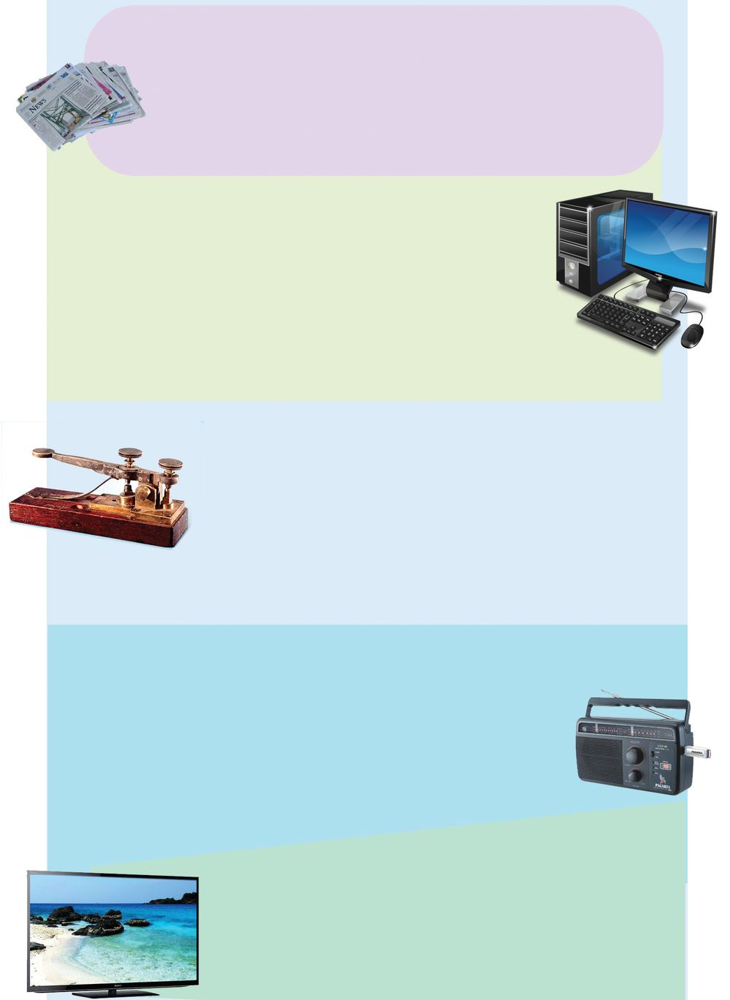
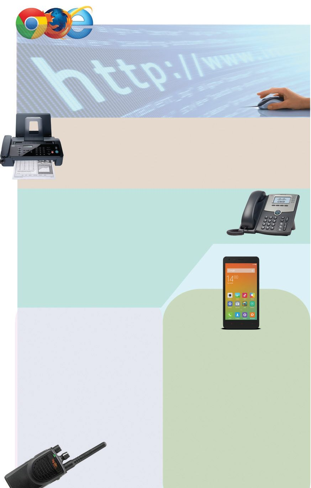
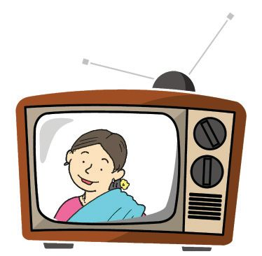
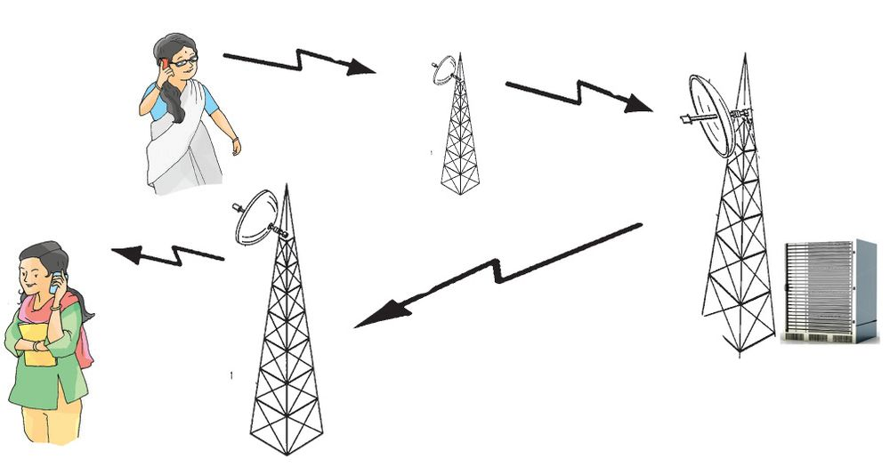
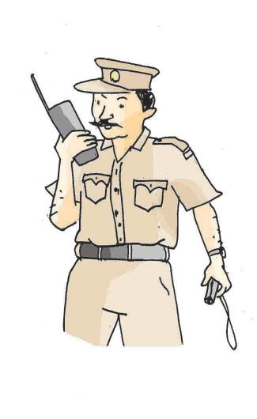
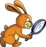

The communication system in those days was not like
what we have today. Trained pigeons were used to
exchange messages. During war, pigeons were used
for exchanging messages and to send messages from
land to ship.
Trained pigeons
were used to carry
messages. They would
return after delivering
the message.
What were the means of communication other than birds?
Environmental Science
Perumbara
Doothan
Anchalottakkaran
Look at the pictures.
How do the people in each picture exchange messages?
108
Changes all around!
Mom, why are you
writing a letter to inform
father about my study tour?
Won't it take two or three
days for the letter to reach
him? Why don’t you inform
him over phone?
Not only that... I
want to inform him
many things.
What all could be the reasons for the changes in the field of
communication?
Write it in your environment diary.
Great changes occur in the field of communication.
These changes make communication faster, less
expensive and more convenient.
From sound to sight
Rapid changes occur in the field of communication. Radio was
the only source of mass communication till a few decades ago.
What about today?
Environmental Science
Identify the changes in the field of communication and
complete the table.
Radio
Letter
Telephone
110
e-mail
Page 47
Figure fig_ch04_p047_01 (Page 47)

Figure fig_ch04_p047_02 (Page 47)
We, the milestones in communication...
Newspaper
Friends… I am one of the most popular media of mass
communication. I can bring you any important news from
any part of the world. Since I come to you everyday with
fresh news, I am also called 'daily.'
Computer
Am I not your most favourite electronic device? I give
you audios, texts, images, videos and all such information
on demand. Not only that, I also store the information
and give it again as you require. Do you forget that we
play computer games together? I update myself
constantly. Try to update yourself with these changes.
Telegraph
I may not be familiar to you because I am out of use
today. But, for a long time, people depended on me to
send information quickly. I got my name from two Greek
words - tele which means distant and graph which
means writing. Please try to know more about me and never forget me.
Radio
I was introduced to the world by a scientist named Marconi.
I can spread information across the world very quickly. But
my voice only reaches you. How many programmes full of
entertainment and information do I bring you daily! Just
listen to me! Don't forget me!
Today I am just like a member of your family. I got my
name from the Greek word tele and the Latin word
vision. I come to you with a variety of programmes with
news, knowledge, entertainment etc.
111
Very Far, a little Far
Television
Page 48
Figure fig_ch04_p048_01 (Page 48)

Figure fig_ch04_p048_02 (Page 48)
Internet
I connect computers in different parts of the world to provide
information. I can enable people in distant places see each other while
talking and also in video conferencing. So the best way to describe me
is 'knowledge at finger tips'.
Fax
I can send the true copy of any message which may include
images and texts, to any part of the world immediately. I
can also exchange telephone messages. My name is Fax.
Telephone
"Mr. Watson, come here…I need your help." This is what I
said first. I was born on 10 March 1876. I was
introduced to the world by the great scientist
Alexander Graham Bell. I have a lot of friends
today. Think of the different services I provide
you today!
Walkie Talkie
Mobile Phone
Environmental Science
Don't you know me? You might have
seen me with policemen because
they use me the most. I am always
alert to maintain law and order and
national security. I was the first
mobile device which was used to
speak to each other.
112
Hello…
Just look at me. I am smart, aren't I?
Yes, I am your friend… I am ready
to offer you all the services you
require which include playing
video games, taking photographs,
exchanging messages etc. You can
access the internet through me.
Haven't you heard of my new
version in which you can see each
other while talking?
Arrange in order
Arrange the following devices in the picture in the chronological
order of their use.
Classify
Classify the following means of communication on the basis of
the nature of message transfer.
Radio
e-mail
Message transfer to
individual
$
Telephone
Fax
Message transfer to
the mass
$
$
$
$
$
Mass media refers to the medium
of communication that transfers an
information to a large number of
people at the same time.
Television
Newspaper
Telegram abandoned
Some of the means of communication we used till recent
times, do not exist now. Why?
113
Very Far, a little Far
Telephone Newspaper
Page 50
Figure fig_ch04_p050_01 (Page 50)

Figure fig_ch04_p050_02 (Page 50)

Figure fig_ch04_p050_03 (Page 50)

Figure fig_ch04_p050_04 (Page 50)
Today, means of communication have expanded to other fields
other than communication. What are the other fields? How are
they used? Let us see.
There is the
possibility of strong
wind upto 150 km/hr
Police found the his
ng
criminal by tracki e
on
ph
e
il
mob
Which are the other fields in which means of
communication are used? Find it out.
$
Live telecast
$
Environmental Science
Do you know?
How does the voice reach the listener through a mobile phone?
114
Communication technology is progressing rapidly. This
helps in forecasting climate change and natural
calamities. It helps us to know information from any part
of the world and pass them to others even sitting in our
own houses.
Significant learning outcomes
The learner
identifies and explains means of communication used in
the past.
identifies and explains the systematic progress in the field
of communication.
prepares notes on modern means of communication.
classifies different mass media on the basis of their nature.
Let us assess
1. The bird which was used to exchange information in the
past.
a. eagle
b. pigeon
c. cuckoo
2. The media that enable us to listen and watch news
a. radio
b. television
c. newspaper
3. Write the names of the Malayalam newspapers you know.
5. Write the advantages and disadvantages of the land phone
and the mobile phone.
115
Very Far, a little Far
4. Write the limitations of the means of communication which
were used in the past.
Page 52
Figure fig_ch04_p052_01 (Page 52)

Figure fig_ch04_p052_02 (Page 52)
Which is the most appropriate instrument
communication in the following situations.
of
a. for a fisherman to contact with his friends, who missed
them while fishing.
b. to listen to the weather forecast.
c. to watch the live telecast of the cricket match between
India and Sri Lanka.
Extended activities
1. Collection of postal stamps.
2. Tele-conference, Video-conferencing
(between the headmaster and students).
3. Making toy telephones.
4. Visit a telephone exchange to learn how messages are
exchanged.
5. Listen to radio news in Malayalam and English.
6. Children’s Radio (Akashvani).